2+2[1] 4sqrt(64)[1] 8bit.ly/rpipelines into your browser address bar.One more chance to open your own slide copy! Get them at bit.ly/rpipelines.
Get up and running with RStudio in the cloud
bit.ly/positlogin into the address bar) to create an account at posit.cloud, using the ‘don’t have an account? Sign up’ box. It’ll ask you to check your email for a verification link so do that before proceeding.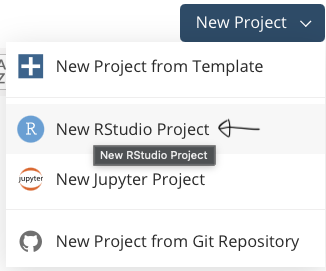
Let me talk through some other bits:
Get up and running with RStudio in the cloud
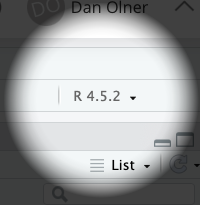
You should now see RStudio open, looking something like the pic below.
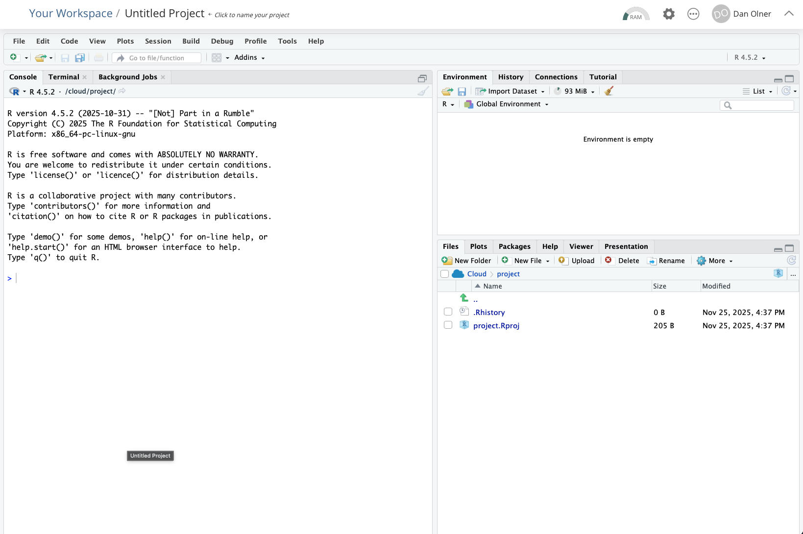
Task: run the setup code - copy and paste this line into the RStudio console and run it with ENTER
The first time this runs, it will install a couple of libraries/packages we need. It should take a bit less than two minutes to finish (it’ll tell you how long it took).
You can follow that link (or just go here) if you want to see what the code’s doing. We’re getting the tidyverse and NOMISR packages installed, and a couple of helper functions.
Pasting into the console…
… should look something like this. Press enter to run, and then we wait for nearly two minutes.
(You’ll get some warning messages - don’t worry about those. If R breaks, it says ERROR not warning.)
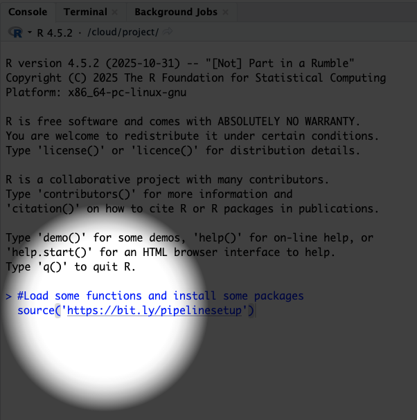
Assuming the setup code has now completed happily…
Task: open a new Quarto document

Task: open a new Quarto document
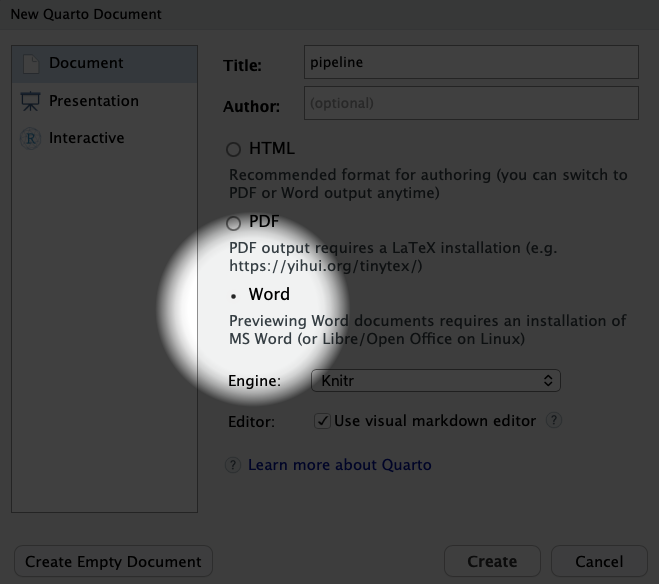
Task: try compiling the document
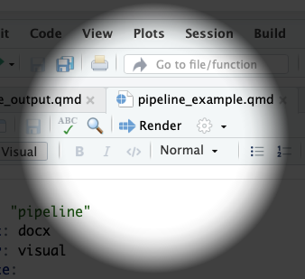
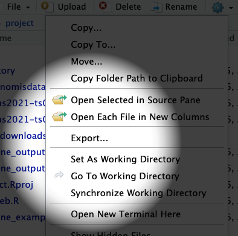
Task: delete all the boilerplate code so we can start fresh
Task: then we add in our own setup code
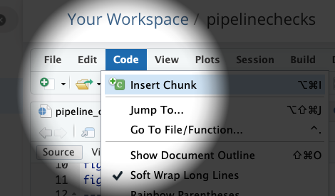
Let’s also add a heading in for our first web data import (something like ‘Extracting from an Excel file’)
Task: now make another code block as we did before
Here’s the code to copy into our new R code block:
# 1. Extracting from an Excel file on a website: productivity data example
# Copy the URL for the Excel sheet from the ONS website for subregional productivity data
# That's here:
# https://www.ons.gov.uk/employmentandlabourmarket/peopleinwork/labourproductivity/datasets/subregionalproductivitylabourproductivitygvaperhourworkedandgvaperfilledjobindicesbyuknuts2andnuts3subregions
# This is just setting a string named 'url'
url = 'https://www.ons.gov.uk/file?uri=/employmentandlabourmarket/peopleinwork/labourproductivity/datasets/subregionalproductivitylabourproductivitygvaperhourworkedandgvaperfilledjobindicesbyuknuts2andnuts3subregions/current/labourproductivityitls1.xlsx'
# We then create a TEMPORARY FILE...
temp_path = tempfile(fileext=".xlsx")
# And use that file path to DOWNLOAD A TEMP COPY OF THE EXCEL TO USE
download.file(url, temp_path, mode="wb")
# Or if you want to keep a local, month-dated version in case it changes later...
# download.file(
# url,
# paste0('ONS_outputperhourdata-',format(Sys.Date(),'%b-%Y'),'.xlsx'),
# mode="wb")
# READ FROM THE EXCEL SHEET
# This goes straight into a dataframe
# Read directly from a specific sheet and range of cells from the downloaded file
# "Table A1: Current Price (smoothed) GVA (B) per hour worked indices; ITL2 and ITL3 subregions, 2004 - 2023"
cp.indices = readxl::read_excel(path = temp_path,range = "A1!A5:W247")
# TAKE A LOOK AT THAT DATA (CLICK ON ITS NAME IN THE ENVIRONMENT PANEL)
# It's got each year IN ITS OWN COLUMN. Not what we want.
# So we RESHAPE
# Get just ITL3 level and pivot years into their own column
# An aside:
# This symbol - %>%
# Is a PIPING OPERATOR
# It lets us pipe one operation to the next
# So we can clearly see each step taken
# Let's number those steps here
#1. Pipe the data into a filter
#2. filter down to just ITL3 zones
#3. pivot long so years are in their own column
#4. Convert year to a sensible format
#5. Remove the ITL column, we don't need that now
# And back on the first line, overwrite the original dataframe
cp.indices = cp.indices %>%
filter(ITL_level == 'ITL3') %>%
pivot_longer(Index_2004:Index_2023, names_to = 'year', values_to = 'index_value') %>%
mutate(
year = substr(year,7,10),
year = as.numeric(year)
) %>%
select(-ITL_level)
# We're going to plot JUST THE UK CORE CITIES
# Here's a list of those I made earlier...
corecities = readRDS(gzcon(url('https://github.com/DanOlner/RegionalEconomicTools/raw/refs/heads/gh-pages/data/corecitiesvector_itl3_2025.rds')))
# Check match...
# Note, this is commented out (so it doesn't output in our final doc)
# BUT we can still run it to check by highlighting the code
# table(corecities %in% cp.indices$Region_name)
# Plot!
# Filter down to the core cities
# And reorder the places by which has the highest average index over all years
ggplot(
cp.indices %>% filter(Region_name %in% corecities),
aes(x = year, y = index_value, colour = fct_reorder(Region_name,index_value,.desc = T))
) +
geom_line() +
geom_hline(yintercept = 100) +
scale_color_brewer(palette = 'Paired') +
theme(legend.title=element_blank()) +
ylab('Output per hour: 100 = UK av')That link to the Excel sheet in the code has been copied directly from the ONS subregional productivity webpage here…
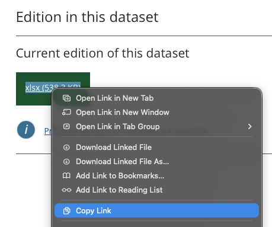
But you do need to do into the Excel file itself to look at what sheet and cell range you need. That only needs doing once though.
We’re going to use the very first sheet: A1, current prices smoothed.
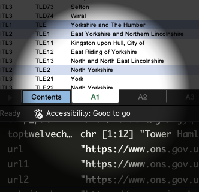
We can run each bit of the code inside the quarto doc (to make sure everything works as we want and see the outputs) as well as run the whole thing to compile the final doc.
Task: so let’s open a new R script in RStudio and do the NOMISR work there

Task: then we paste the NOMISR code below into our new script
# Script to get NOMIS data via NOMISR package
# And then save for use in Quarto
# See https://docs.evanodell.com/nomisr/articles/introduction.html
# For NOMISR essentials
#Load some functions (and install some packages if not present)
source('https://bit.ly/pipelinesetup')
# Load libraries (if running for first time)
library(tidyverse)
library(nomisr)
# STEP 1: Get info on all available datasets
# Check how long... 14 seconds on my last attempt
x = Sys.time()
nomisinfo = nomis_data_info() %>%
select(id, description.value, name.value)
Sys.time() - x
# If that's being a pain or too slow
# Press the red STOP!! button and load this Blue Peter version
nomisinfo = readRDS(gzcon(url('https://github.com/DanOlner/RegionalEconomicTools/raw/refs/heads/gh-pages/bres_nomisdatasave.rds')))
# LET'S LOOK INSIDE THAT DATASET
# If we do that, we can search for the dataset code we want to use
# Let's search for 'employment' in RStudio...
# Now we can get metadata for the BRES data, having found the code
a = nomis_get_metadata(id = "NM_189_1")
#Pick on some of those for a closer look
#Note, MEASURE in the actual downloaded data is "MEASURE_NAME" column...
# We're going to use INDUSTRY PERCENTAGE
# to look at what percent of resident workers are in different sectors
# We'll use the code on the left
nomis_get_metadata(id = "NM_189_1", concept = "MEASURE")
# This one lists the employment type options we've got
nomis_get_metadata(id = "NM_189_1", concept = "EMPLOYMENT_STATUS")
# This one's especially useful - we need it to get the right geography code
geogz = nomis_get_metadata(id = "NM_189_1", concept = "GEOGRAPHY", type = "type")
print(geogz, n = 60)
# From the metadata, we're going to pull out the geography codes
# That we need to put into NOMISR
# for JUST the core cities again
# Slightly different names / shapes in BRES, but mostly the same
# Again, here's one I made earlier...
corecities.bres = readRDS(gzcon(url('https://github.com/DanOlner/RegionalEconomicTools/raw/refs/heads/gh-pages/data/corecities_bres.rds')))
# USE LOCAL AUTHORITIES TO GET ALL TIMEPOINTS
# ITL3 2021 zones in the BRES data only have 2022-2024
# "TYPE424 local authorities: district / unitary (as of April 2023)"
# Belfast won't be there cos BRES is GB but otherwise good
placeid = nomis_get_metadata(id = "NM_189_1", concept = "geography", type = "TYPE424") %>%
filter(label.en %in% corecities.bres) %>% select(id) %>% pull
# NOW WE GET THE ACTUAL DATA
# Using many of the codes we just looked at
# Check how long it takes too...
# p.s. if you want to save time, I've also Blue Petered this data
# You'll have the option to use that in the Quarto doc rather than run NOMISR
# I'm also not sure if the NOMIS API will be made sad by us all trying to download at the same time...
x = Sys.time()
# So the actual GET DATA function
# We pass in the various values we got from above
# Note also the option to set the year - we don't do that, so we get all of them
# We also select only some columns, which does save a bit of download time
bres = nomis_get_data(id = "NM_189_1", geography = placeid,
# time = "latest",#Can use to get specific timepoint. If left out, we'll get em all
# MEASURE = 1,#Count of jobs
MEASURE = 2,#'Industry percentage'
MEASURES = 20100,#Just gives value (of percent) - redundant but lowers data download
EMPLOYMENT_STATUS = 2,#Full time jobs
select = c('DATE','GEOGRAPHY_NAME','INDUSTRY_NAME','INDUSTRY_TYPE','OBS_VALUE')
)
Sys.time() - x
# That takes 25-30 seconds in posit's R
# No fun if you're trying to check changes - don't want to run that every time
# Get the data in a different script and store somewhere the quarto doc can reload easily
# Save for use in quarto
# The RDS format is quick and compact
saveRDS(bres,'bres_nomisdatasave.rds')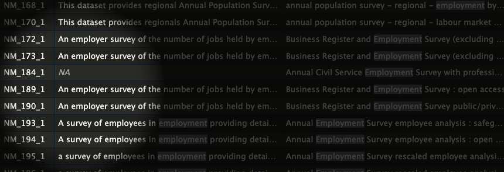
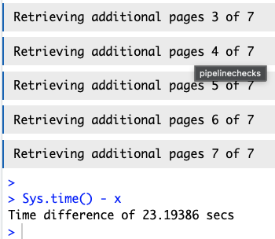
Why does it need reloading into the Quarto script?
Task: make a new heading and code block in the Quarto doc and copy/paste this code in
# Get the BRES data we extracted in the separate script
bres = readRDS('bres_nomisdatasave.rds')
# Or load a 'here's one I made earlier' version if NOMISR wasn't playing for any reason
# bres = readRDS(gzcon(url('https://github.com/DanOlner/RegionalEconomicTools/raw/refs/heads/gh-pages/bres_nomisdatasave.rds'))
# Check its size in memory
#pryr::object_size(bres)
# Quick look at the data structure, filtered down to just 2 digit SICs
# bres %>% filter(INDUSTRY_TYPE == 'SIC 2007 division (2 digit)') %>% View
# WE CAN DO DATA CHECKS IN A QUARTO DOC
# I TEND TO COMMENT THEM OUT SO THEY DON'T OUTPUT BUT IT CAN BE USEFUL TO KEEP IT ALL TOGETHER.
# For instance:
# Check industry percentages sum to 100 per ITL3 zone
# Mostly - some roundings-down build up to not quite 100%
# bres %>%
# filter(INDUSTRY_TYPE == 'SIC 2007 division (2 digit)') %>%
# group_by(GEOGRAPHY_NAME,DATE) %>%
# summarise(totalpercent = sum(OBS_VALUE))
# WE'LL PICK OUT JUST FINANCE SECTORS TO LOOK AT HOW JOB PROPORTIONS HAVE CHANGED OVER TIME
# Remember, we already filtered down to core cities to lessen the download
# OK, let's look at the three finance 2-digit sectors
# 2 digit SICS are 64,65 and 66: sum those
# Pick out just 2 digit first as well
finance.percent = bres %>%
filter(
INDUSTRY_TYPE == 'SIC 2007 division (2 digit)',
qg('64|65|66', INDUSTRY_NAME)
) %>%
group_by(GEOGRAPHY_NAME,DATE) %>%
summarise(
percent = sum(OBS_VALUE)
)
# Plot. May need to smooth
ggplot(
finance.percent,
aes(x = DATE, y = percent, colour = fct_reorder(GEOGRAPHY_NAME,percent,.desc = TRUE))
) +
geom_line() +
scale_color_brewer(palette = 'Paired') +
theme(legend.title=element_blank()) +
scale_x_continuous(breaks = unique(finance.percent$DATE)) +
ylab('Percent') +
ggtitle('Percent jobs in finance sectors, GB core cities')
# While we're here, extract a single value from the data to use inline
edinburgh_latestpercent = finance.percent %>%
filter(
DATE == max(DATE),
GEOGRAPHY_NAME == 'City of Edinburgh'
) %>%
pull(percent)Task: we can also add R code directly into the text - for instance, so we can add values from the data
Paste the following chunk in as text after the code block. Pasting into visual moded should work fine.
Task: data can go straight into tables too
Paste the following into a new R code chunk - it’ll use the data to populate a table.
Task: in the Quarto doc, start a new section, make a new code block and paste this in
# From NOMIS webpage bulk Census download
website_basename = "https://www.nomisweb.co.uk"
# We use the xml2 library to read the page
doc = read_html(paste0(website_basename,"/sources/census_2021_bulk"))
# Extract all <a> tags with hrefs containing "census2021*.zip"
zip_links = xml_attr(
xml_find_all(doc, "//a[contains(@href, 'census2021') and contains(@href, '.zip')]"),
"href"
)
#Set global timeout to very bigly indeed for parsing and downloading
#ten hours per file covers all eventualities!
options(timeout = 36000)
# AS WE'VE DONE BEFORE, WE DOWNLOAD A ZIP TO A TEMPORARY LOCATION
url = paste0(website_basename,zip_links[qg('TS063', zip_links)][1])
temp_path = tempfile(fileext=".zip")
download.file(url, temp_path, mode="wb")
# LOOK INSIDE ZIP FOLDER - We can see separate files for different geographical scales
# With list = TRUE, this DOES NOT unzip - it just lists the zip folder's contents
filenames = unzip(temp_path, list = TRUE)
# Take a look...
# filenames
# IT CONTAINS SEPARATE CSVS FOR DIFFERNT GEOGRAPHICAL SCALES
# We want lower tier local authorities
# Here's an explanation for Census geographies...
# https://www.ons.gov.uk/census/census2021dictionary/areatypedefinitions
# Pick the geographical scale we want
# HERE, UNZIP IS EXTRACTING A SPECIFIC FILE FROM INSIDE IT
# WITHOUT UNZIPPING THE WHOLE THING
occ = read_csv(unzip(temp_path, files = filenames$Name[qg('ltla',filenames$Name)]))
# TAKE A LOOK AT THE COLUMN NAMES FOR THAT DATA
# Again, we've got columns that we want to pivot
# colnames(occ)
occ = occ %>%
pivot_longer(
4:13, names_to = 'occupation', values_to = 'count'
)
# We then keep just the subgroup occupations
# And find our own percentages for each place
occ = occ %>%
filter(
!qg('all usual',occupation)
) %>%
group_by(geography) %>%
mutate(
percent_occ = (count / sum(count)) * 100
) %>%
ungroup()
# Confirm sums to 100% per place... tick
# occ %>% group_by(geography) %>%
# summarise(percentsum = sum(percent_occ))
# Nicer occupation names
occ = occ %>%
mutate(
occupation = case_when(
qg('Managers', occupation) ~ 'Managers, directors & senior officials',
qg('Professional occ', occupation) ~ 'Professionals',
qg('Associate', occupation) ~ 'Associate professional & technical',
qg('secretar', occupation) ~ 'Admin & secretarial',
qg('trades', occupation) ~ 'Skilled trades',
qg('caring', occupation) ~ 'Caring, leisure & other service',
qg('sales', occupation) ~ 'Sales & customer service',
qg('process', occupation) ~ 'Process, plant & machine operatives',
qg('elementary', occupation) ~ 'Elementary'
)
)
# Filter to core cities
# table(corecities %in% occ$geography)
# table(c(corecities,'Cardiff','Newcastle upon Tyne') %in% occ$geography)
# core city names from BRES will work for us here
# We lose Glasgow, Edinburgh and Belfast as it's England and Wales Census data
corecities.bres = readRDS(gzcon(url('https://github.com/DanOlner/RegionalEconomicTools/raw/refs/heads/gh-pages/data/corecities_bres.rds')))
occ.core = occ %>%
filter(
geography %in% corecities.bres
)
# Might a filled bar is the way forward? Hmm.
ggplot(
occ.core,
aes(y = geography, x = percent_occ, fill = occupation)
) +
geom_bar(position="fill", stat="identity") +
scale_fill_brewer(palette = 'Paired') +
ylab("")Task: that’s OK, but what about how those places compare to average?
# Get occupation values for England outside London
# To compare differences
occ.all = read_csv(unzip(temp_path, files = filenames$Name[6])) %>%
filter(geography != 'London') %>%
pivot_longer(
4:13, names_to = 'occupation', values_to = 'count'
)
# Sum for rest of England/Wales outside London
# By occupation
occ.all = occ.all %>%
group_by(occupation) %>%
summarise(count = sum(count)) %>%
filter(!qg('usual',occupation)) %>%
mutate(percent_occ = (count/sum(count)) * 100)
occ.all = occ.all %>%
mutate(
occupation = case_when(
qg('Managers', occupation) ~ 'Managers, directors & senior officials',
qg('Professional occ', occupation) ~ 'Professionals',
qg('Associate', occupation) ~ 'Associate professional & technical',
qg('secretar', occupation) ~ 'Admin & secretarial',
qg('trades', occupation) ~ 'Skilled trades',
qg('caring', occupation) ~ 'Caring, leisure & other service',
qg('sales', occupation) ~ 'Sales & customer service',
qg('process', occupation) ~ 'Process, plant & machine operatives',
qg('elementary', occupation) ~ 'Elementary'
)
)
# Stick them all togeher into one dataframe
# Rows can go on the end, as long as we make sure structure is the same
occ.compare = bind_rows(
occ.core %>% select(-date,-`geography code`),
occ.all %>% mutate(geography = 'E+W minus London')
)
# Can now see how core cities differ from average (outside London)
ggplot() +
geom_point(
data = occ.compare %>% filter(!qg('e\\+w', geography)),
aes(x = percent_occ, y = occupation, colour = geography),
size = 3,
shape = 17
# height = 0.1
) +
scale_color_brewer(palette = 'Paired') +
geom_point(
data = occ.compare %>% filter(qg('e\\+w', geography)),
aes(x = percent_occ, y = fct_reorder(occupation,percent_occ)),
size = 7, shape = 3, colour = 'black'
) +
xlab('Occupation % of all employed (18+)') +
ylab("") +
ggtitle('Census 2021: core cities % occupations\nEng/Wales minus London % overlaid (cross)')